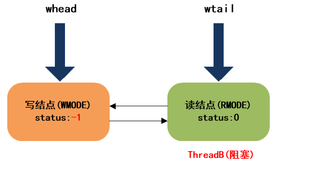

StampedLock 实现原理剖析¶
StampedLock 在获取锁的时候会返回一个 long 型的数据戳，该数据戳用于稍后的锁释放参数，如果返回的数据戳为 0 则表示锁获取失败。
StampedLock 是不可重入的，即使当前线程持有了锁再次获取锁还是会返回一个新的数据戳，所以要注意锁的释放参数，使用不小心可能会导致死锁。
StampedLock 几乎具备了 ReentrantReadWriteLock 和 ReentrantLock 的功能，我们将上面的测试代码替换为 StampedLock 来熟悉下它的用法。
final HashMap<String, Integer> map = new HashMap<>();
final StampedLock stampedLock = new StampedLock();
public void put2(String k, Integer v) {
long stamp = stampedLock.writeLock();
try {
map.put(k, v);
} finally {
stampedLock.unlockWrite(stamp);
}
}
public Integer get2(String k) {
long stamp = stampedLock.readLock();
try {
return map.get(k);
} finally {
stampedLock.unlockRead(stamp);
}
}
StampedLock 还提供了乐观读模式，使用 tryOptimisticRead()方法获取一个非排他锁并且不会进入阻塞状态。
该方法会返回 long 型的数据戳，数据戳非 0 表示获取锁成功，如果为 0 表示获取锁失败。
我们把上面测试用例的读操作换成乐观读模式。
public String optimisticGet(String k) {
//尝试获取读锁，返回获取的结果，线程不会进入阻塞
long stamp = lock.tryOptimisticRead();
//对上一步获取的结果进行验证
//如果验证失败，则此时可能其他线程加了写锁，那么此时线程通过加读锁进入阻塞状态直到获取到读锁
//如果验证成功，不进行任何加锁操作直接返回共享数据，这样的话就实现了无锁读的操作，提高了读访问性能。
if (!lock.validate(stamp)) {
stamp = lock.readLock();
try {
return map.get(k);
}finally {
lock.unlockRead(stamp);
}
}
return map.get(k);
}
那么什么时候选择 synchronized，什么时候选择 ReentrantLock 呢？
如果你用到了 ReentrantLock 的高级性能，那么没办法只能 ReentrantLock 了。
如果不是高级性能可以优先选择 synchronized，毕竟不用显示的加锁和解锁。但是我们需要考虑 synchronized 锁的升级不可逆的特点，如果线程并发存在比较明显的峰谷，则可以考虑选用 ReentrantLock，毕竟重量级锁的性能确实不怎么好。
StampedLock 的性能明显优于 ReentrantReadWriteLock，且它还提供了乐观读的模式，优化了读操作的性能。StampedLock 还提供了 ReentrantLock 的加锁解锁方式，因此如果遇到读写锁的场景那么可以考虑优先选择 StampedLock。
StampedLock 的特点¶
StampedLock 的主要特点概括一下，有以下几点：
所有获取锁的方法，都返回一个邮戳（Stamp），Stamp 为 0 表示获取失败，其余都表示成功；
所有释放锁的方法，都需要一个邮戳（Stamp），这个 Stamp 必须是和成功获取锁时得到的 Stamp 一致；
StampedLock 是不可重入的；（如果一个线程已经持有了写锁，再去获取写锁的话就会造成死锁）
StampedLock 有三种访问模式：
①Reading（读模式）：功能和 ReentrantReadWriteLock 的读锁类似
②Writing（写模式）：功能和 ReentrantReadWriteLock 的写锁类似
③Optimistic reading（乐观读模式）：这是一种优化的读模式。
StampedLock 支持读锁和写锁的相互转换
我们知道 RRW 中，当线程获取到写锁后，可以降级为读锁，但是读锁是不能直接升级为写锁的。
StampedLock 提供了读锁和写锁相互转换的功能，使得该类支持更多的应用场景。
无论写锁还是读锁，都不支持 Conditon 等待
我们知道，在 ReentrantReadWriteLock 中，当读锁被使用时，如果有线程尝试获取写锁，该写线程会阻塞。
但是，在 Optimistic reading 中，即使读线程获取到了读锁，写线程尝试获取写锁也不会阻塞，这相当于对读模式的优化，但是可能会导致数据不一致的问题。所以，当使用 Optimistic reading 获取到读锁时，必须对获取结果进行校验。
StampedLock 原理¶
StampedLock 虽然不像其它锁一样定义了内部类来实现 AQS 框架，但是 StampedLock 的基本实现思路还是利用 CLH 队列进行线程的管理，通过同步状态值来表示锁的状态和类型。
StampedLock 内部定义了很多常量，定义这些常量的根本目的还是和 ReentrantReadWriteLock 一样，对同步状态值按位切分，以通过位运算对 State 进行操作：
对于 StampedLock 来说，写锁被占用的标志是第 8 位为 1，读锁使用 0-7 位，正常情况下读锁数目为 1-126，超过 126 时，使用一个名为 readerOverflow 的 int 整型保存超出数。
/** Number of processors, for spin control */
//cpu核数 用于控制自旋次数
private static final int NCPU = Runtime.getRuntime().availableProcessors();
/** Maximum number of retries before enqueuing on acquisition */
//尝试获取锁时如果超过该值仍未获得锁，加入等待队列
private static final int SPINS = (NCPU > 1) ? 1 << 6 : 0;
/** Maximum number of retries before blocking at head on acquisition */
//等待队列的首节点，自选获取锁失败 超过该值时会继续阻塞
private static final int HEAD_SPINS = (NCPU > 1) ? 1 << 10 : 0;
//首次进入阻塞之前的最大重试次数
/** Maximum number of retries before re-blocking */
private static final int MAX_HEAD_SPINS = (NCPU > 1) ? 1 << 16 : 0;
/** The period for yielding when waiting for overflow spinlock */
private static final int OVERFLOW_YIELD_RATE = 7; // must be power 2 - 1
/** The number of bits to use for reader count before overflowing */
private static final int LG_READERS = 7;
// Values for lock state and stamp operations
private static final long RUNIT = 1L; //一单位读锁 0000 0001
private static final long WBIT = 1L << LG_READERS; //写锁标识位
private static final long RBITS = WBIT - 1L; //读状态标识位 0111 1111
private static final long RFULL = RBITS - 1L; //读锁的最大数量 0111 1110
private static final long ABITS = RBITS | WBIT; //用于获取读写状态 1111 1111
private static final long SBITS = ~RBITS; // note overlap with ABITS 11111... 1000 0000
//初始state的值
// Initial value for lock state; avoid failure value zero
private static final long ORIGIN = WBIT << 1;
// Special value from cancelled acquire methods so caller can throw IE
private static final long INTERRUPTED = 1L;
// Values for node status; order matters
private static final int WAITING = -1;
private static final int CANCELLED = 1;
// Modes for nodes (int not boolean to allow arithmetic)
private static final int RMODE = 0;
private static final int WMODE = 1;
/** Wait nodes */
static final class WNode {
volatile WNode prev;
volatile WNode next;
volatile WNode cowait; // list of linked readers
volatile Thread thread; // non-null while possibly parked
volatile int status; // 0, WAITING, or CANCELLED
final int mode; // RMODE or WMODE
WNode(int m, WNode p) { mode = m; prev = p; }
}
/** Head of CLH queue */
private transient volatile WNode whead;
/** Tail (last) of CLH queue */
private transient volatile WNode wtail;
// views
transient ReadLockView readLockView;
transient WriteLockView writeLockView;
transient ReadWriteLockView readWriteLockView;
//同步状态state ，处于写锁使用第8位（为1标识占用）读锁使用前7位（1-126，附加的readerOverflow用于当读锁超过126时）
/** Lock sequence/state */
private transient volatile long state;
/** extra reader count when state read count saturated */
//因为读锁只使用前7位，所以当超过 128之后将使用一个int变量来记录
private transient int readerOverflow;
/**
* Creates a new lock, initially in unlocked state.
*/
public StampedLock() {
state = ORIGIN;
}
部分常量的比特位表示如下：

另外，StampedLock 相比 ReentrantReadWriteLock，对多核 CPU 进行了优化，可以看到，当 CPU 核数超过 1 时，会有一些自旋操作
WNode 队列中的节点对应的是 WNode
static final class WNode {
//前继节点
volatile WNode prev;
//后继节点
volatile WNode next;
//悲观读锁对应的栈
volatile WNode cowait;
//对应的线程
volatile Thread thread;
//节点的状态：取消CANCEL 1、等待WATING -1。
volatile int status;
//节点类型：读锁、写锁
final int mode;
WNode(int m, WNode p) { mode = m; prev = p; }
}
具体的组织方式如下图所示，值得注意的是，队列的第一个节点是哨兵节点，不代表具体的请求锁的节点。

来看下 writeLock 方法¶
/**
*获取写锁，如果获取失败进入阻塞
* 注意该方法不响应中断
**/
public long writeLock() {
long s, next; // bypass acquireWrite in fully unlocked case only
return ((((s = state) & ABITS) == 0L && ///((s = state) & ABITS) == 0L 表示读锁和写锁都为使用
U.compareAndSwapLong(this, STATE, s, next = s + WBIT)) ? //cas 操作 将第8位置1 表示写锁被占用
next : acquireWrite(false, 0L)); //获取失败则调用acquireWrite 加入等待队列
}
StampedLock 中大量运用了位运算，这里(s = state) & ABITS == 0L 表示读锁和写锁都未被使用，这里写锁可以立即获取成功，然后 CAS 操作更新同步状态值 State。
操作完成后，等待队列的结构如下：

注意：StampedLock 中，等待队列的结点要比 AQS 中简单些，仅仅三种状态。
0：初始状态
-1：等待中
1：取消
来看下 readLock 方法¶
由于 ThreadA 此时持有写锁，所以 ThreadB 获取读锁失败，将调用 acquireRead 方法，加入等待队列：
/**
* 获取读锁，如果写锁被占用，线程会阻塞
*
**/
public long readLock() {
long s = state, next; // bypass acquireRead on common uncontended case
//whead == wtail 队列为空 且读锁数目未超限
//(s & ABITS) < RFULL 表示写锁未被占用，且读锁数量没有超限
return ((whead == wtail && (s & ABITS) < RFULL &&
U.compareAndSwapLong(this, STATE, s, next = s + RUNIT)) ?
next : acquireRead(false, 0L));
}
acquireRead 方法非常复杂，用到了大量自旋操作：
/**
* 尝试自旋的获取读锁, 获取不到则加入等待队列, 并阻塞线程
*
* @param interruptible true 表示检测中断, 如果线程被中断过, 则最终返回INTERRUPTED
* @param deadline 如果非0, 则表示限时获取
* @return 非0表示获取成功, INTERRUPTED表示中途被中断过
*/
private long acquireRead(boolean interruptible, long deadline) {
WNode node = null, p; // node指向入队结点, p指向入队前的队尾结点
/**
* 自旋入队操作
* 如果写锁未被占用, 则立即尝试获取读锁, 获取成功则返回.
* 如果写锁被占用, 则将当前读线程包装成结点, 并插入等待队列（如果队尾是写结点,直接链接到队尾;否则,链接到队尾读结点的栈中）
*/
for (int spins = -1; ; ) {
WNode h;
if ((h = whead) == (p = wtail)) { // 如果队列为空或只有头结点, 则会立即尝试获取读锁
for (long m, s, ns; ; ) {
if ((m = (s = state) & ABITS) < RFULL ? // 判断写锁是否被占用
U.compareAndSwapLong(this, STATE, s, ns = s + RUNIT) : //写锁未占用,且读锁数量未超限, 则更新同步状态
(m < WBIT && (ns = tryIncReaderOverflow(s)) != 0L)) //写锁未占用,但读锁数量超限, 超出部分放到readerOverflow字段中
return ns; // 获取成功后, 直接返回
else if (m >= WBIT) { // 写锁被占用,以随机方式探测是否要退出自旋
if (spins > 0) {
if (LockSupport.nextSecondarySeed() >= 0)
--spins;
} else {
if (spins == 0) {
WNode nh = whead, np = wtail;
if ((nh == h && np == p) || (h = nh) != (p = np))
break;
}
spins = SPINS;
}
}
}
}
if (p == null) { // p == null表示队列为空, 则初始化队列(构造头结点)
WNode hd = new WNode(WMODE, null);
if (U.compareAndSwapObject(this, WHEAD, null, hd))
wtail = hd;
} else if (node == null) { // 将当前线程包装成读结点
node = new WNode(RMODE, p);
} else if (h == p || p.mode != RMODE) { // 如果队列只有一个头结点, 或队尾结点不是读结点, 则直接将结点链接到队尾, 链接完成后退出自旋
if (node.prev != p)
node.prev = p;
else if (U.compareAndSwapObject(this, WTAIL, p, node)) {
p.next = node;
break;
}
}
// 队列不为空, 且队尾是读结点, 则将添加当前结点链接到队尾结点的cowait链中（实际上构成一个栈, p是栈顶指针 ）
else if (!U.compareAndSwapObject(p, WCOWAIT, node.cowait = p.cowait, node)) { // CAS操作队尾结点p的cowait字段,实际上就是头插法插入结点
node.cowait = null;
} else {
for (; ; ) {
WNode pp, c;
Thread w;
// 尝试唤醒头结点的cowait中的第一个元素, 假如是读锁会通过循环释放cowait链
if ((h = whead) != null && (c = h.cowait) != null &&
U.compareAndSwapObject(h, WCOWAIT, c, c.cowait) &&
(w = c.thread) != null) // help release
U.unpark(w);
if (h == (pp = p.prev) || h == p || pp == null) {
long m, s, ns;
do {
if ((m = (s = state) & ABITS) < RFULL ?
U.compareAndSwapLong(this, STATE, s,
ns = s + RUNIT) :
(m < WBIT &&
(ns = tryIncReaderOverflow(s)) != 0L))
return ns;
} while (m < WBIT);
}
if (whead == h && p.prev == pp) {
long time;
if (pp == null || h == p || p.status > 0) {
node = null; // throw away
break;
}
if (deadline == 0L)
time = 0L;
else if ((time = deadline - System.nanoTime()) <= 0L)
return cancelWaiter(node, p, false);
Thread wt = Thread.currentThread();
U.putObject(wt, PARKBLOCKER, this);
node.thread = wt;
if ((h != pp || (state & ABITS) == WBIT) && whead == h && p.prev == pp) {
// 写锁被占用, 且当前结点不是队首结点, 则阻塞当前线程
U.park(false, time);
}
node.thread = null;
U.putObject(wt, PARKBLOCKER, null);
if (interruptible && Thread.interrupted())
return cancelWaiter(node, p, true);
}
}
}
}
for (int spins = -1; ; ) {
WNode h, np, pp;
int ps;
if ((h = whead) == p) { // 如果当前线程是队首结点, 则尝试获取读锁
if (spins < 0)
spins = HEAD_SPINS;
else if (spins < MAX_HEAD_SPINS)
spins <<= 1;
for (int k = spins; ; ) { // spin at head
long m, s, ns;
if ((m = (s = state) & ABITS) < RFULL ? // 判断写锁是否被占用
U.compareAndSwapLong(this, STATE, s, ns = s + RUNIT) : //写锁未占用,且读锁数量未超限, 则更新同步状态
(m < WBIT && (ns = tryIncReaderOverflow(s)) != 0L)) { //写锁未占用,但读锁数量超限, 超出部分放到readerOverflow字段中
// 获取读锁成功, 释放cowait链中的所有读结点
WNode c;
Thread w;
// 释放头结点, 当前队首结点成为新的头结点
whead = node;
node.prev = null;
// 从栈顶开始(node.cowait指向的结点), 依次唤醒所有读结点, 最终node.cowait==null, node成为新的头结点
while ((c = node.cowait) != null) {
if (U.compareAndSwapObject(node, WCOWAIT, c, c.cowait) && (w = c.thread) != null)
U.unpark(w);
}
return ns;
} else if (m >= WBIT &&
LockSupport.nextSecondarySeed() >= 0 && --k <= 0)
break;
}
} else if (h != null) { // 如果头结点存在cowait链, 则唤醒链中所有读线程
WNode c;
Thread w;
while ((c = h.cowait) != null) {
if (U.compareAndSwapObject(h, WCOWAIT, c, c.cowait) &&
(w = c.thread) != null)
U.unpark(w);
}
}
if (whead == h) {
if ((np = node.prev) != p) {
if (np != null)
(p = np).next = node; // stale
} else if ((ps = p.status) == 0) // 将前驱结点的等待状态置为WAITING, 表示之后将唤醒当前结点
U.compareAndSwapInt(p, WSTATUS, 0, WAITING);
else if (ps == CANCELLED) {
if ((pp = p.prev) != null) {
node.prev = pp;
pp.next = node;
}
} else { // 阻塞当前读线程
long time;
if (deadline == 0L)
time = 0L;
else if ((time = deadline - System.nanoTime()) <= 0L) //限时等待超时, 取消等待
return cancelWaiter(node, node, false);
Thread wt = Thread.currentThread();
U.putObject(wt, PARKBLOCKER, this);
node.thread = wt;
if (p.status < 0 && (p != h || (state & ABITS) == WBIT) && whead == h && node.prev == p) {
// 如果前驱的等待状态为WAITING, 且写锁被占用, 则阻塞当前调用线程
U.park(false, time);
}
node.thread = null;
U.putObject(wt, PARKBLOCKER, null);
if (interruptible && Thread.interrupted())
return cancelWaiter(node, node, true);
}
}
}
}
我们来分析下这个方法。 该方法会首先自旋的尝试获取读锁，获取成功后，就直接返回；否则，会将当前线程包装成一个读结点，插入到等待队列。 由于，目前等待队列还是空，所以 ThreadB 会初始化队列，然后将自身包装成一个读结点，插入队尾，然后在下面这个地方跳出自旋：
if (p == null) { // p == null表示队列为空, 则初始化队列(构造头结点)
WNode hd = new WNode(WMODE, null);
if (U.compareAndSwapObject(this, WHEAD, null, hd))
wtail = hd;
} else if (node == null) { // 将当前线程包装成读结点
node = new WNode(RMODE, p);
} else if (h == p || p.mode != RMODE) { // 如果队列只有一个头结点, 或队尾结点不是读结点, 则直接将结点链接到队尾, 链接完成后退出自旋
if (node.prev != p)
node.prev = p;
else if (U.compareAndSwapObject(this, WTAIL, p, node)) {
p.next = node;
break; //跳出自选
}
}
此时，等待队列的结构如下：

跳出自旋后，ThreadB 会继续向下执行，进入下一个自旋，在下一个自旋中，依然会再次尝试获取读锁，如果这次再获取不到，就会将前驱的等待状态置为 WAITING, 表示我（当前线程）要去睡了（阻塞），到时记得叫醒我：
if (whead == h) {
if ((np = node.prev) != p) {
if (np != null)
(p = np).next = node; // stale
} else if ((ps = p.status) == 0) // 将前驱结点的等待状态置为WAITING, 表示之后将唤醒当前结点
U.compareAndSwapInt(p, WSTATUS, 0, WAITING); //进入阻塞
else if (ps == CANCELLED) {
if ((pp = p.prev) != null) {
node.prev = pp;
pp.next = node;
}

最终, ThreadB 进入阻塞状态:
} else { // 阻塞当前读线程
long time;
if (deadline == 0L)
time = 0L;
else if ((time = deadline - System.nanoTime()) <= 0L) //限时等待超时, 取消等待
return cancelWaiter(node, node, false);
Thread wt = Thread.currentThread();
U.putObject(wt, PARKBLOCKER, this);
node.thread = wt;
if (p.status < 0 && (p != h || (state & ABITS) == WBIT) && whead == h && node.prev == p) {
// 如果前驱的等待状态为WAITING, 且写锁被占用, 则阻塞当前调用线程
U.park(false, time);
}
node.thread = null;
U.putObject(wt, PARKBLOCKER, null);
if (interruptible && Thread.interrupted())
return cancelWaiter(node, node, true);
}
最终，等待队列的结构如下：

总结¶
StampedLock 也是基于 state 和队列实现的，只不过不能重入。通过引入了乐观读并不加锁，在读多写少的场景中性能会比 ReentrantReadWriteLock 要好！
StampedLock 和 ReentrantReadWriteLock 的队列也有区别：
1、StampedLock 中的连续申请的读锁节点通过 cowaiter 新起了一个维度链表来存放。而 ReentrantReadWriteLock 的读锁节点是一个一个的排列在队列中的。